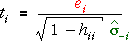

Detecting outlliers
As in simple linear regression, although studentised residuals are better than ordinary residuals, they are still poor for detecting outliers. A more sensitive way to detect outliers is with externally studentised residuals. Whereas the ordinary standardised residuals use the mean residual sum of squares (MSResid) from the full data set as an estimate of σ2,

the externally studentised residuals separately estimate σ for each observation using the data set without that observation,

Illustration
In the diagram above, drag the red arrows to make the low-leverage point in the middle of the diagram into an outlier. Observe how the standardised residual is affected.
Select Externally studentised residual from the pop-up menu at the top and observe that the plot of externally studentised residuals is better at showing up the point when it is an outlier.
Repeat with the High leverage point.